Plot posterior on difference in rates given paired contingency table
MC approx to figure 1a of Shi and Bai 2008 PMTKneedsStatsToolbox ksdensity
Contents
% This file is from pmtk3.googlecode.com requireStatsToolbox setSeed(1); ns = [20 20 10 50 30]; n10s = [0 1 2 20 28]; n01s = [20 19 4 5 0]; figure; hold on; [styles, colors, symbols] = plotColors; for i=1:length(ns)
n = ns(i); n10=n10s(i); n01=n01s(i);
n00 = n - (n01+n10);
n11 = 0;
[deltasPaired, postPaired, thetasPaired] = ...
contingencyTablePairedDiffPostMc(n00, n10, n01, n11);
style = [styles{i}, colors(i)];
plot(deltasPaired, postPaired, style, 'linewidth', 3, ...
'displayname', sprintf('n=%d,n10=%d,n01=%d', n, n10, n01));
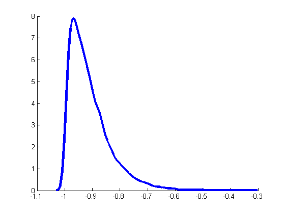 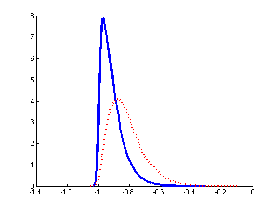  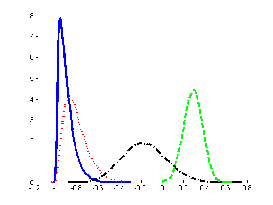 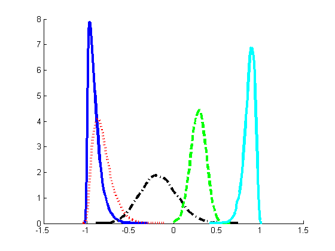
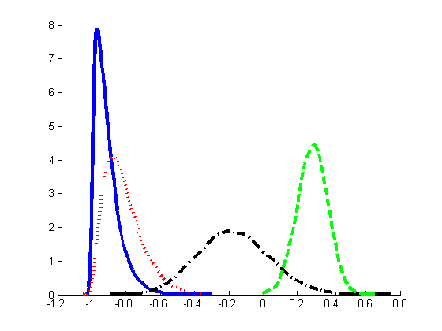 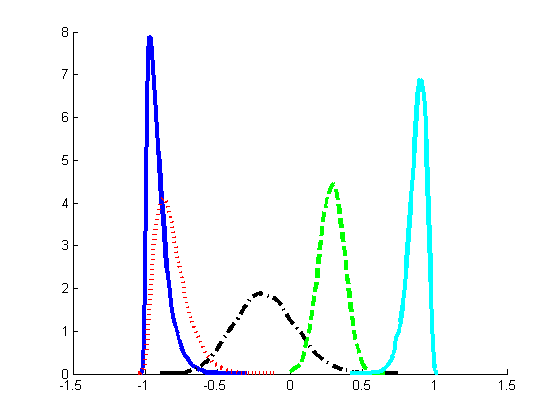 end legend('location', 'north'); box on; title('paired'); printPmtkFigure('pairedTestDemo')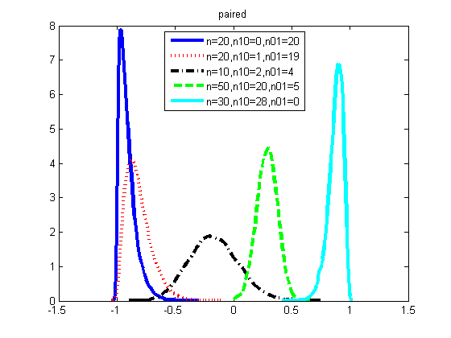
Unpaired
figure; hold on for i=1:length(ns)
n = ns(i); n10=n10s(i); n01=n01s(i);
y1 = n10+n11; y2 = n01+n11;
n1 = n00+n01+y1;
n2 = n00 + n10 + y2;
[deltasUnpaired, postUnpaired, thetasUnpaired] = ...
contingencyTableUnpairedDiffPostMc(n1, y1, n2, y2);
style = [styles{i}, colors(i)];
plot(deltasUnpaired, postUnpaired, style, 'linewidth', 3, ...
'displayname', sprintf('n1=%d,y1=%d,n2=%d,y2=%d', n1, y1, n2, y2));
 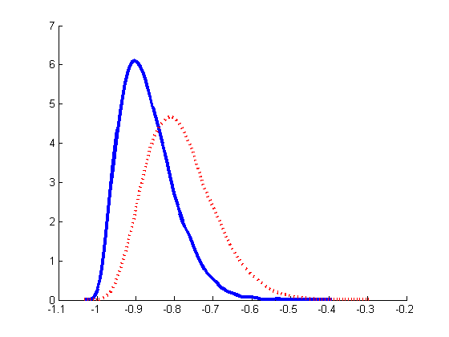 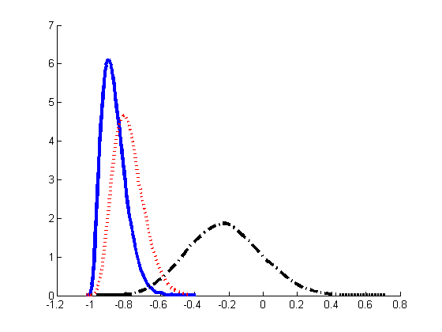 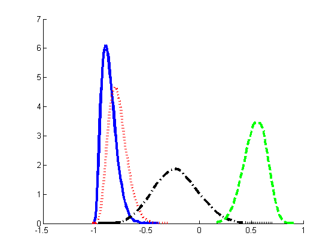 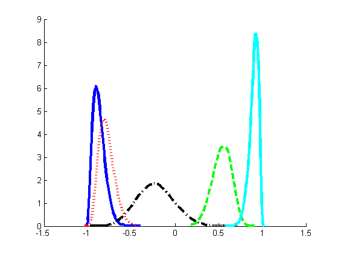
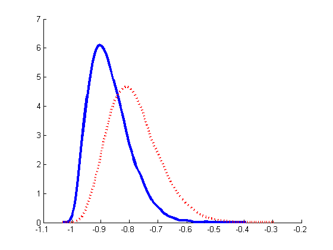 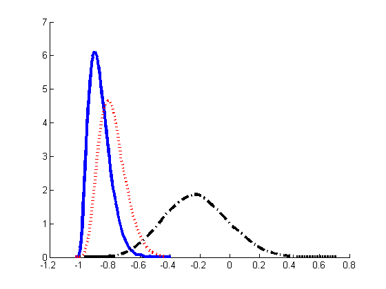 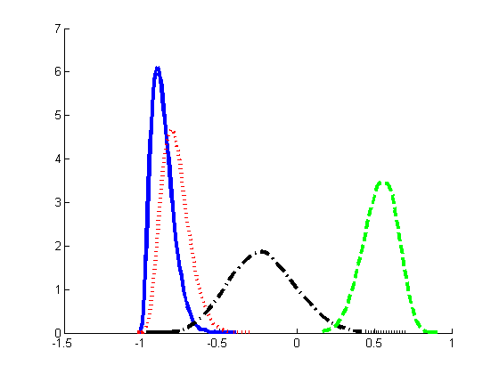 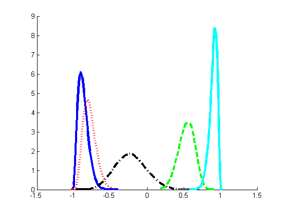 end legend('location', 'north'); title('unpaired'); box on; printPmtkFigure('unpairedTestDemo')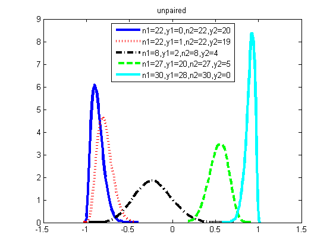